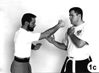

Extracted from a much broader article titled, TRIPLE THREAT — Escrima's Fighting Forms Promise the Utmost in
Baton, Knife and Empty-Hand Versatility! published in Black Belt magazine, March, 2003.
The basic drill consists of five couplets of two-movement actions: an initial defensive action followed by a counterattack. Each couplet follows this pattern, and practiced correctly, enables both players receive equal training time.
|
Couplet Number One
The drill begins with player-B (on the right) advancing with his right foot and attacking with a high right-hand strike that descends vertically toward player-A's head or face (called a 12-line in most Filipino systems). Using this as the starting point, the drill progresses through a series of five couplets or linked pairs. Each couplet begins with an initial defensive action followed by a counterattack.
As player-B advances and attacks with his descending right hammerfist strike, player-A defends by first stepping back with his right foot as his left hand intercepts B's right arm near his elbow). Simultaneously, player-A punches his attacker in his exposed right ribs (Photo 1a). (Admittedly, an empty-hand attack of this sort is, without question, weak; however, place a beer bottle, club, or screwdriver, and its weakness fades into reality.)
As player-A strikes he uses his left hand to clear away B's attacking right arm (from right-to-left). Player-A ends his defense here with his right fist pointed toward his opponent. (Photo 1b).
Player-A's counterattack is a right vertical punch to B's face (Photo 1c). With this counterattack, the first couplet is complete and player-B now gets his turn at defense and counterattack.
|

|
|
Number Two
Player-B's defense (to A's counterattack) is to parry A's right forearm with a two-hand movement we call strike-left. Here, player-B's right hand makes the initial interception of the punch (Photo 2a), and his left follows it immediately, striking player-A in the face (Photo 2b). In this movement, player-B practically climbs up his opponent's arm to his face as he moves in for his counterattack.
Completing the second couplet, player-B counterattacks with a right backhand strike to A's groin (Photo 2c). Since player-B moves inside his opponent's right arm with his strong side forward, this relaxed backhand strike is as unexpected as it is effective.
|
|
|
Number Three
The following three couplets are noteworthy because they provide excellent examples of how the Filipino
principle of "Defanging the Snake" permeates whatever they do, be it striking with batons,
knives, or empty hands. Note how the arms (the fangs) are attacked in the next three couplets.
Player-A's defense against B's last counterattack is a simple one: he simply drops his left arm over his opponent's attacking arm as he simultaneously pulls his hips back (Photo 3a) and redirects the backhand away from his groin. Simultaneously, player-A fires off a right-to-left right palm strike to the left side of player-B's face. This blow continues through his face and returns (left to right) as a punishing hammerfist strike to B's right elbow (Photo 3b). Player-A's left hand works in conjunction with the attack to B's elbow by simultaneously accelerating B's right arm (right to left) against the opposing blow in a shearing action. Such a blow could easily take your assailant's arm out of the fight.
Completing the couplet, player-A slams a vertical right punch into B's diaphragm (Photos 3c and 3d). The punch is the empty-hand equivalent to the 5-line thrust found in weapons combat in Filipino systems.
|
|
|
Number Four
Player-B's response to A's vertical punch to his diaphragm is a left-to-right parry of A's right hand, coupled with a simultaneous right horizontal fist strike to player-A's right upper arm (Defanging the Snake), as in Photo 4a. (The blow is to the point where the upper arm narrows immediately above the biceps muscle_between the anterior deltoid and biceps muscle.)
Player-B follows up with a diagonal left-to-right "hammerwrist" strike with his right (Photo 4-b) down on to the right side of A's neck (called a 2-line in Filipino systems). The "hammerwrist" is used because its narrow edge is very hard and fits well into the opponent's neck area.
|

|
|
Number Five
The final couplet we also call "curls." As player-B makes his downward diagonal attack to the right side of A's neck, player-A's left hand intercepts B's attacking right arm at the elbow (Defanging the Snake) and immediately drives a rising right vertical elbow up through the tender underside of B's forearm (Photo 5a). From here, player-A advances with his right foot and attacks with a high right-hand hammerfist strike that descends vertically to player-B's head, as in Photo-5b. (This is the same action that player-B used to start the drill.) As player-A strikes, player-B withdraws (Photo 5c), stepping back with his right foot (not especially clear in the photograph) and beginning his next cycle of the drill (only this time he will play A's part and player-A will now play B's).
|
|
|
Conclusion
This drill does not address every possible attack, nor does it teach all possible counters. Moreover, even cursory discussion of other critical elements like angling and footwork has been omitted. It does, however, show you how a variety of effective tactics can be developed very quickly for use against a variety of knife attacks. With just one basic pattern, the student learns defensive tactics against assaults coming at him from a half-dozen common lines of attack. It just doesn't get any easier than that.
|
The following animated view
should pull it all together.
JavaScript slide show freely provided by
Javascript Kit
|
|